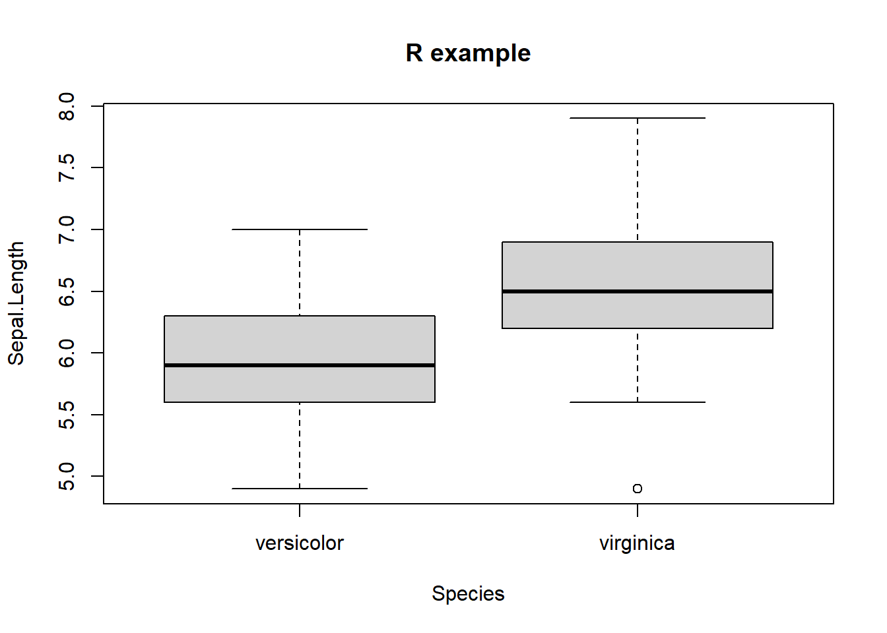
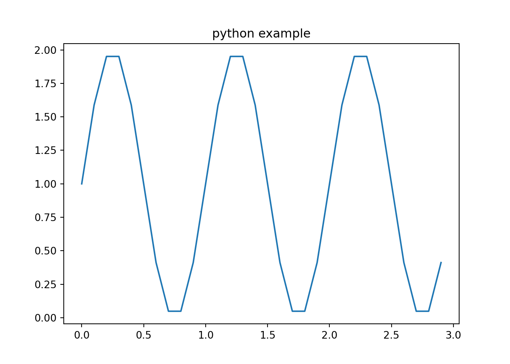

Note: This document is to provide a sample template for the lecture notes in .Rmd
Memo: test
horizontal line ***
Usage of singe quote
x = 5 # radius of a circleFor a circle with the radius 5, its area is 78.5398163.
2 Head 2
Refer to the other lecture note in this blog
2.1 R example
Description
Below chunk is a simple R code and its output
# R code example
dat <- iris
# remove one level to have only two groups
dat <- subset(dat, Species != "setosa")
dat$Species <- factor(dat$Species)
dim(dat)
## [1] 100 5
boxplot(dat[, 1] ~ dat$Species, # draw boxplots by group
ylab = names(dat[1]), # rename y-axis with variable's name
xlab = "Species"
)
title('R example')
Regarding the option whether to show output or not as well as running the code when knitting, here are the options.
eval: whether to evaluate the codeecho: whether to show the code or notresult: whether to show the result outputcollapse: Whether to merge text output and source code into a single code block in the outputwarning,message,error: wether to display warning, message, and errorinclude: whether to include anything from a code chunk in the output document
2.2 Python Example
To run python code in R, we simply need install the package called reticulate.
#install.packages('reticulate')
library(reticulate)
#py_install(packages = "matplotlib")import numpy as np
import matplotlib.pyplot as plt
x = np.arange(0,3,0.1)
y = 1 + np.sin(2*np.pi*x)
plt.plot(x,y)
plt.title('python example')
3 Latex Example
We observe an \(iid\) sample of size \(n\), \({[X_i]}_{i=1}^{n}\stackrel{iid}{\sim}F\). Each observation is real-values. We wish to estimate some parameter of the distribution \(F\) that can be written as a functional of \(F, T(F)\). Examples include the following.
- \(\mu = \int{xdF(x)}\)
- \(median = \inf \{x:F(x)\ge0.5\}\)
- \(Var=\int{\left(x-\mu\right)^2dF}\)
3.0.0.1 References (Example)
McDonald, J.H. 2014. Handbook of Biological Statistics (3rd ed.). Sparky House Publishing, Baltimore, Maryland.